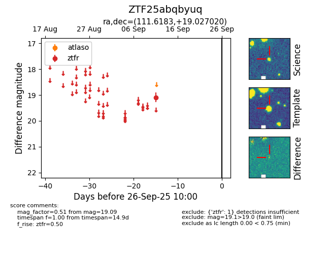

FINK: ZTF25abqbyuq
Lasair: ZTF25abqbyuq
ALeRCE: ZTF25abqbyuq
ZTF25abqbyuq (ztf,fink)
equatorial (ra, dec) = (111.6183,+19.02702)
galactic (l, b) = (199.4208,+16.06790)

last ztfr=19.09
1 ztfr detections